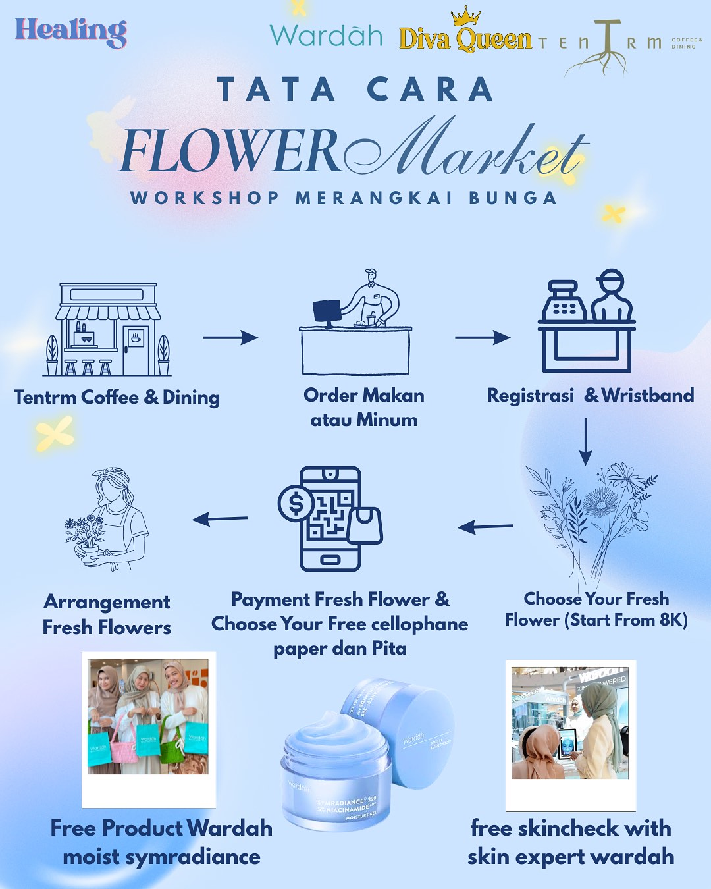
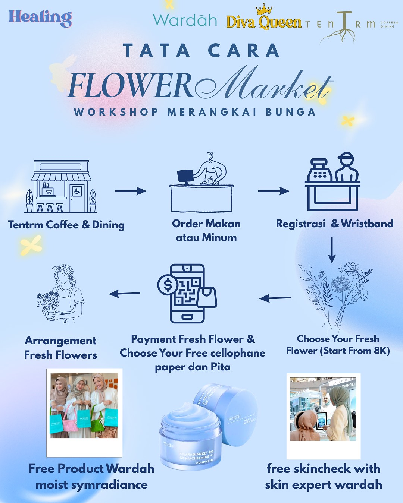
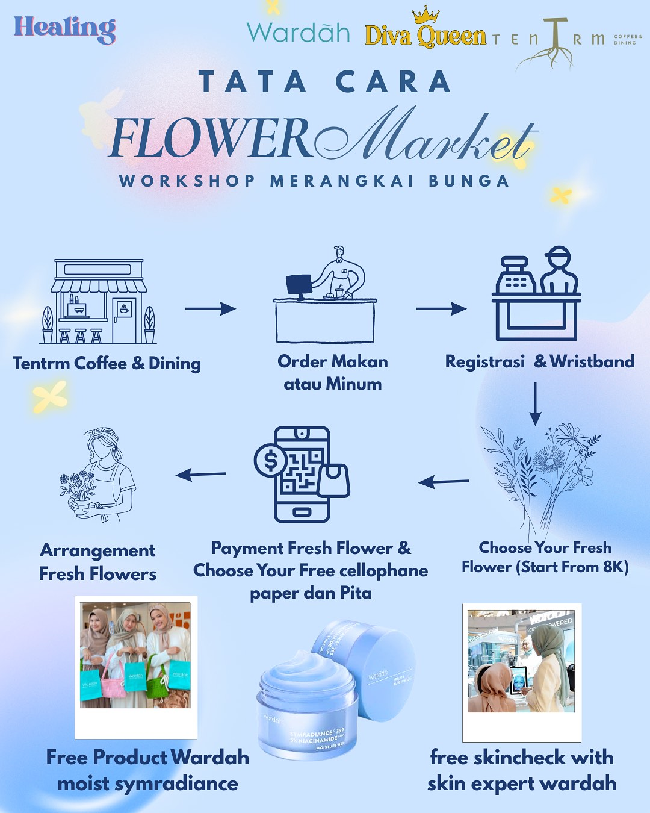

Promo dan Event di TENTRM Coffee & Dining
Temukan berbagai promo serta event menarik disini!

 

#BeginYourCoffeeJourneyHere
Cafe aesthetic ini mengusung konsep alami dengan sentuhan pohon-pohon dan warna beige yang lembut menciptakan suasana hangat, sementara tanaman hijau dan pohon kecil menghiasi sudut-sudut cafe, memberikan nuansa segar. Meja dan kursi kayu minimalis serta pencahayaan lembut menambah keindahan tempat ini.

"nice atmosphere apalagi habis hujan, punya konsep coffeeshop yang terbilang jarang ditemui di medan.
tersedia spot outdoor dan indoor, stopkontak aman buat kerja/nugas. pilihan menu cukup beragam
dengan harga yang affordable.
parkiran luas."
Lihat Selengkapnya
"Seperti namanya, Tentrm ... cukup nyaman sih ngopi di sini. Mereka kyk Sangrai, untuk kopi ada harga
"Teman" dan "Keluarga". Klo pesan kopi dan snack dpt harga "Teman" tp klo mau hrga "Keluarga" hrs
pesan kopi dan meal. Cuma klo pagi mealnya blm ready sih. Ini yg ke 2 kali aku ngopi di sini. Yg
pertama pas mereka baru2 buka, mungkin dah lebig setahun yg lalu. Tp cukup surprise jg krn td
stafnya ingat sm aku 😍.
Selain indoor dan outdoor yg nyaman dan Tentrm, ada juga ruangan VIP tp kapasitasnya terbatas untuk
small group."
Lihat Selengkapnya
"Cafenya nyamann bangett, enak buatt nongkrong, nugas di sini juga enak karena suasananya tenang
walaupun rame. hargaa makanannya normall kaya cafe2 pada umumnya. Buat cakenyaa rasanyaa enakk. Suka
banget wajib kesiniii!!!!🥰."
Lihat Selengkapnya